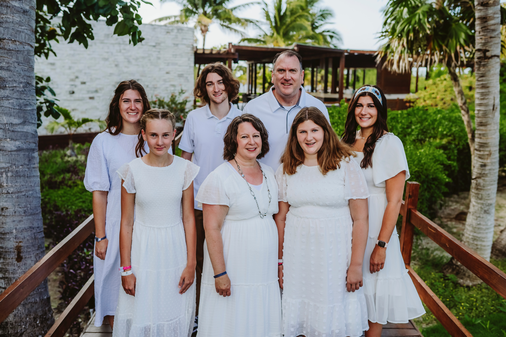

I am a student here at BYU. I graduated High School in 2019 from Havre High School. I then played volleyball and studied at Miles Community College for 2 years where I earned my Associates Degree before going on a mission for the Church of Jesus Christ of Latter-Day Saints. I served for 18 months in Buenos Aires, Argentina. I now study full time at BYU and work on campus.
